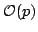
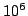
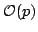
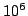

Next: Data structures
Up: User Guide
Previous: Basic algebraic categories
Contents
Index
All of the arithmetic types provided by libaldor (machine and software
integers, floats, as well as Complex) remain available
in Algebra, and most of them are extended to various algebraic categories.
As in libaldor, Integer is actually a macro that defaults to
AldorInteger. If integer efficiency is important for your application,
we strongly recommend that you link with the GMP version of
Algebra instead,
see the section on using GMP for
more details. Regardless of the integer implementation that you choose,
we also recommended that you use MachineInteger whenever
appropriate, in particular for loop
or data structure indices. Conversions between
MachineInteger
and Integer are provided by coerce
and machine.
In addition, Algebra
provides two different implementations of the finite field
 when
when  is a machine prime: SmallPrimeField provides a
standard implementation, while ZechPrimeField provides
a significantly faster implementation based on a logarithmic
representation of its elements.
However, ZechPrimeField
precomputes a table of size  so it should only be used
for reasonably small values of and when a significant amount
of calculations in
are made following the creation
of the type (we have found the precomputation time to be under one second
for around  on recent workstations).
is a machine prime: SmallPrimeField provides a
standard implementation, while ZechPrimeField provides
a significantly faster implementation based on a logarithmic
representation of its elements.
However, ZechPrimeField
precomputes a table of size  so it should only be used
for reasonably small values of and when a significant amount
of calculations in
are made following the creation
of the type (we have found the precomputation time to be under one second
for around  on recent workstations).
The type Fraction implements the fraction field of
the GcdDomain
implements the fraction field of
the GcdDomain  . Typical arguments are Integer
(to get the rational numbers) or polynomial types. Note that fractions
are automatically normalized after each arithmetic operation.
. Typical arguments are Integer
(to get the rational numbers) or polynomial types. Note that fractions
are automatically normalized after each arithmetic operation.
Next: Data structures
Up: User Guide
Previous: Basic algebraic categories
Contents
Index
Manuel Bronstein
2004-06-28